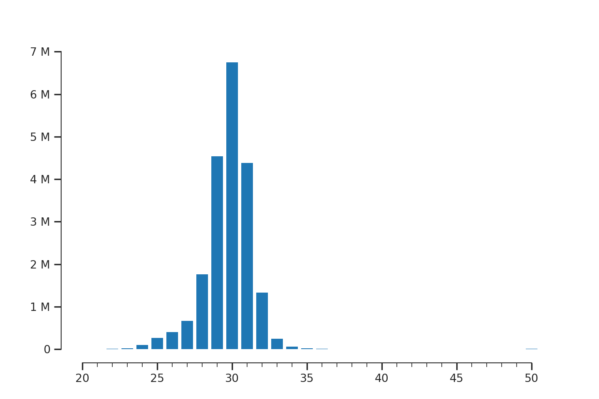
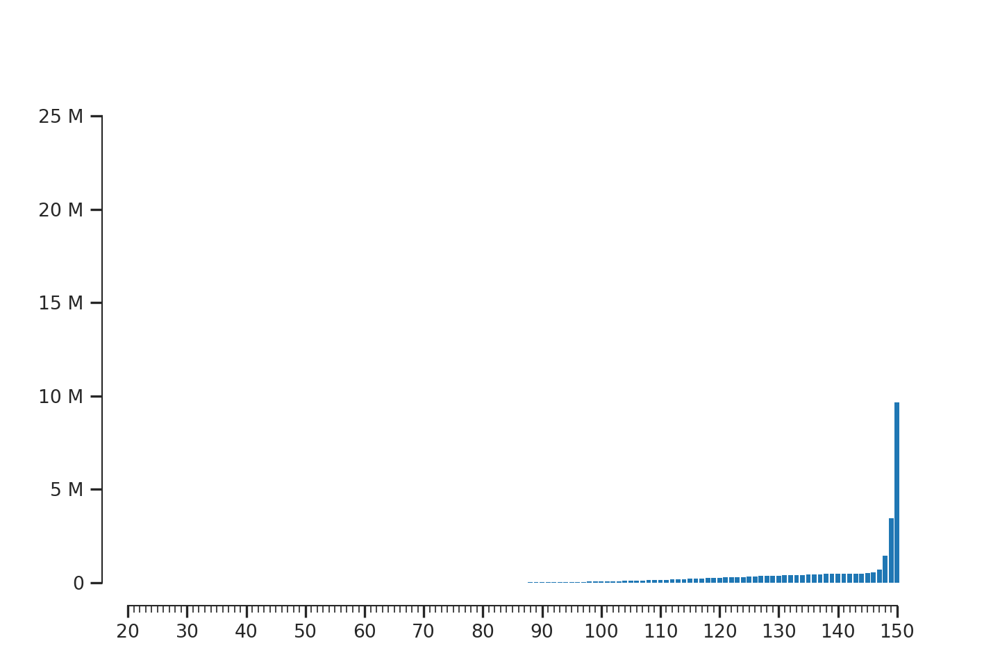

API Usage¶
from riboraptor import read_length_distribution
from riboraptor import fragment_enrichment
from riboraptor.plotting import plot_read_counts
from riboraptor.plotting import plot_fragment_dist
Counting Fragment Lengths¶
ribo_bam_f = '../data/U251_ribo.bam'
fragment_lengths = read_length_distribution(ribo_bam_f)
ax, fig = plot_fragment_dist(fragment_lengths)

{kind=link}
Fragment length distribution of an Ideal Ribo-seq library
The abosve is a good example of an ideal Ribo-seq library where the fragment lengths are concentrated between 28 and 31 nucelotides.
We can also “quantify” this enrichment:
ribo_enrichment = fragment_enrichment(ribo_bam_f)
print(ribo_enrichment)
>>> (75.19322097821424, 0.045749574004642399)
Let’s compare this with a RNA-Seq sample from the same sample.
rna_bam_f = '../data/U251_rna.bam'
fragment_lengths = read_length_distribution(rna_bam_f)
ax, fig = plot_fragment_dist(fragment_lengths)

{kind=link}
Fragment length distribution of a paired-end RNA-seq library
rna_enrichment = fragment_enrichment(rnabam_f)
print(rna_enrichment)
>>> (2.334333862251336e-05, 1.0)
Gene Coverage¶
In order to visualize genewise coverage, we need to create a bigwig file first. This inturn requires a bedgraph file.
Creating bedgraph¶
from riboraptor import create_bedgraph
create_bedgraph(ribo_bam_f, strand='both', end_type='5prime', outfile='../data/U251_ribo.bg')
Creating bigwig¶
from riboraptor import bedgraph_to_bigwig
bedgraph_f = '../data/U251_ribo.bg'
chrom_sizes = '../data/hg38.sizes'
bedgraph_to_bigwig(bedgraph_f, chrom_sizes, '../data/U251_ribo.bw')
Gene coverage plot¶
from riboraptor import gene_coverage
cds_bed = '../data/hg38.cds.bed'
bw = '../data/U251_ribo.bw'
coverage, _, _, _ = gene_coverage('ENSG00000080824', cds_bed, bw, 60)
The last argument 60 here specifies the number of upstream bases to count. We visualize only the first 100 bases:
ax, fig, peak = plot_read_counts(coverage[range(-60,100)],
majorticks=10,
minorticks=5,
marker='o',
millify_labels=False)

Gene coverage across ENSG00000080824
Periodicity Index¶
TODO
5’UTR/CDS/3’UTR coverage¶
TODO